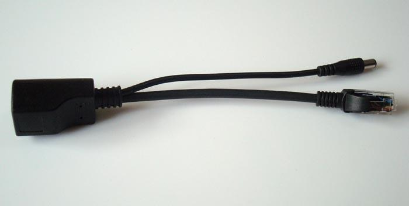
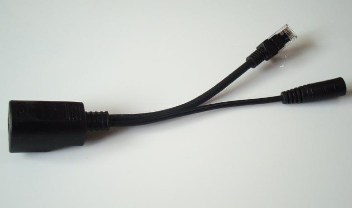

POE Splitter
POE (Power Over Ethernet)指的是在现有的以太网Cat.5布线基础架构不作做何改动的情况下，在为一些基于IP的终端（如IP电话机、无线局域网接入点AP、网络摄像机等）传输数据信号的同时，还能为此类设备提供直流供电的技术。POE Slitter就是提供此转分离技术的电缆线。

Seeedstudio-POE Splitter

Seeedstudio-POE splitter
Features
- DC connector inner diameter of 2.1mm x outer diameter of 5.5mm
Bus length 18-20cm
- Operating temperature -40 ° C - 60 ° C
- Supply voltage: 3 ~ 57V
- 30W max.
Application Ideas
- WLAN, wireless routers, switches, network phones, gateways, access control, security monitoring, ......, etc.
Warning
POE Splitter 支持的最大电压为57V，不能直接插到电源插座。
Specifications
Electronic Characterstics
Pin脚：4/5(+),7/8(-)
数据Pin脚:1,2,3,6
| Pin
|
Input
|
Output
|
Pin
|
| 1
|
Tx(+)
|
Tx(+)
|
1
|
| 2
|
Tx(-)
|
Tx(-)
|
2
|
| 3
|
Rx(+)
|
Rx(+)
|
3
|
| 4
|
N.C
|
+48V
|
4
|
| 5
|
N.C
|
+48V
|
5
|
| 6
|
Rx(-)
|
Rx(-)
|
6
|
| 7
|
GND
|
GND
|
7
|
| 8
|
GND
|
GND
|
8
|
Usage
Support
" Ask questions on Seeed forum.
How to buy
Click here to buy from POE Splitter.
See Also
Other related products,resources and projects.
Licensing
Copyright (c) 2008-2016 Seeed Development Limited (
www.seeedstudio.com /
www.seeed.cc)
This static html page was created from http://www.seeedstudio.com/wiki